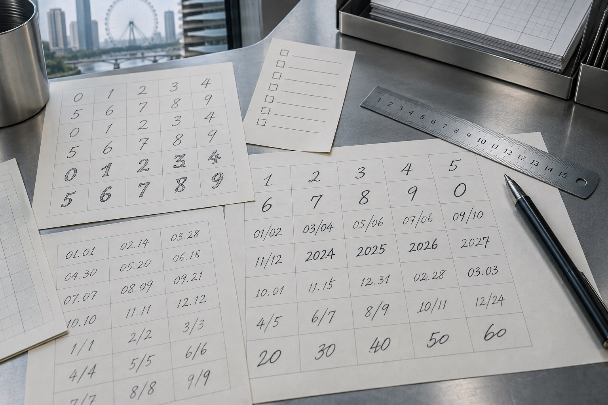

数字和日期反复出现，天津模仿笔迹样本可先做字符清单
数字、日期和金额写法出现频率高，可先做索引，再回到原页查看上下文。

字符清单只是查找索引
天津模仿笔迹样本中数字与日期出现频繁，可以记录哪些页包含数字、月份和金额，方便回到原文查看。清单保留原页编号，不把零散数字拼成新的“完整样本”。相同数字在不同位置可能写得不同，上下文仍是必要参照。
金额与姓名按区域分别标记
模仿签字可能连着日期，模仿签名则位于表格姓名栏，两者可在索引中分列。笔迹鉴定材料的数字部分能提供多少可比内容，需结合原件与自然样本判断。数字清单帮助找到材料，不能据此单独确认文件形成时间或书写人身份。
提交前的一项核对
字符清单只是查找索引，需要注意什么？
数字、日期和金额写法出现频率高，可先做索引，再回到原页查看上下文。可先按这一点核对现有材料，再说明目前缺少的内容。